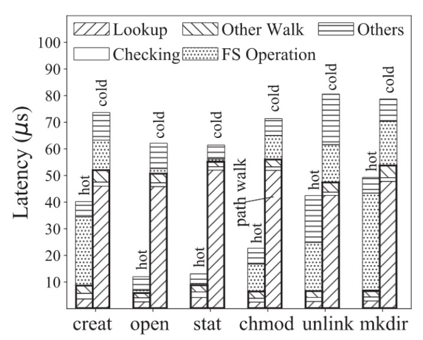
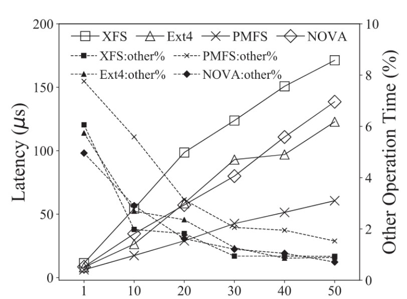
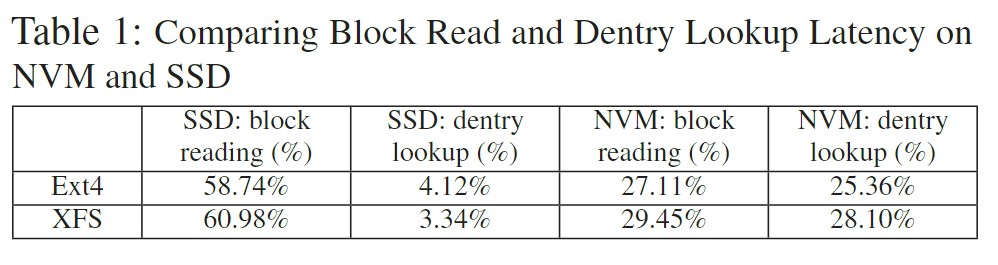
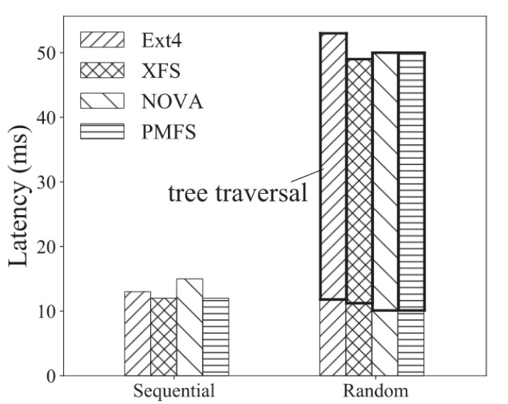
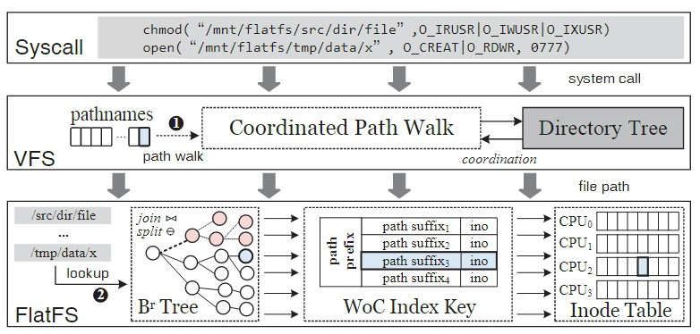
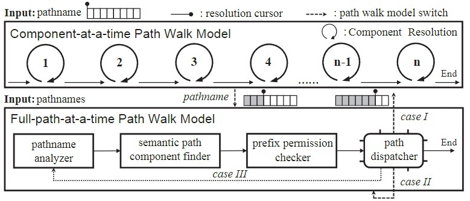

论文阅读 | FlatFS：Flatten Hierarchical File System Namespace on Non-volatile Memories
文章工作主要由河海大学的水利部水利大数据国家重点实验室完成，发表于Fast'22。这篇论文主要面向非易失性内存（NVM），针对现有文件系统的层次化命名空间性能低下且扩展性不佳的问题，提出了扁平化命名空间文件系统FlatFS。
Paper Link：https://www.usenix.org/conference/atc22/presentation/cai
背景和动机
NVM以DRAM相当数量级的性能，具备了可按字节寻址和可持久化存储的能力，吸引了很多学者在其上做文章，不乏面向NVM的文件系统设计。但无论是大规模使用的Ext4、XFS文件系统，还是学界为NVM提出的PMFS、NOVA等文件系统，都是采用的层次化的树形结构组织文件系统命名空间。Linux的虚拟文件系统（VFS）也统一所有挂载的文件系统，维护了一个全局目录树视图。层次化的结构清晰明了，固然是对用户友好的，但也不免存在缺陷：



低效的文件路径解析：目录树结构下，文件路径的解析要逐级查找。对路径上的每一层，都要进行目录项搜索以及权限检查等耗时的操作。路径解析的开销还是线性增长的，假设一个文件路径包含了\(n\)层，那在真正找到最后的文件前要对前面的\(n-1\)层进行解析。因此存在扩展性受限的问题。相比于SSD或HDD，路径解析的开销在NVM上表现得尤为明显（硬件性能的提升使得瓶颈转移到软件栈上），这一点可以从看出来图1、图2和表1看出来。

命名空间遍历开销巨大：文件系统使用有许多涉及到命名空间遍历的操作，例如find、rm -r和ls -R。Otpane NVM的顺序访问和随机访问性能存在2.3~3.5倍的差距，访问延迟和带宽都对访问模式非常敏感。对传统目录树遍历会引入大量的间接访问和随机访问，从而导致遍历延迟极高。图3分别将1024个文件放置在1层深的目录树和11层深的目录树，并使用ls -R指令，模拟顺序访问遍历和随机访问遍历，结果延迟相差了4.08倍。
系统设计

Linux对众多文件系统是通过VFS层进行统一管理的，而VFS又是以目录树对命名空间进行组织，所以要想在Linux实现一个扁平化的内核文件系统，对VFS的改造也是必须的，否则VFS在访问扁平文件系统时还是会按照树形结构的路径解析方式逐级解析。因此文章工作除了实现FlatFS本身，还为VFS层添加了了一个协同路径解析模块（Coordinated Path Walk）。
协同路径解析

在FlatFS注册进内核以后，VFS要同时管理树形文件系统和扁平文件系统两类文件系统，各自路径的解析方式不一。简单的来说，协同路径解析的作用就是在树形文件系统挂载路径就按照传统的逐级解析方式（Component-at-a-time，一次解析一级），而当解析FlatFS下的路径时就切换到它独有的全路径解析方式（Full-path-at-a-time，一次解析一个全路径）。我们只要关注文章对后者的设计就好了，过程分为以下几个部分。
Pathname Analyzer
/mnt/flatfs/src/./link/a/..///file => /mnt/flatfs/src/link/a/../file
第一步是经过Pathname Analyzer的处理，在这里会将文件路径的.和多余的/直接去除。
Semantic Path Component Finder
/mnt/flatfs/src/link/a/../file + symbol link：link -> data/x => /mnt/flatfs/src/data/x/a/../file
在这里，会对文件路径中的软链接和挂载点做处理。处理过程使用了后面会提到的\(B^{r}\)树。对于软链接path，FlatFS都会为其在\(B^{r}\)树中创建一个特殊的记录path/\xFE。例如，有一个路径/a/b/link/c，其中link是软链接，那么FlatFS就会在\(B^{r}\)树中创建一条记录/a/b/link/\xFE。向\(B^{r}\)树查找/a/b/link/c路径时，由于该路径不实际存在，会返回第一个比它大的值/a/b/link/\xFE，那么久说明该路径存在有软链接，那么就会进行软链接路径的替换处理。
但到目前，仍然还有一个问题没有解决。对于形如/a/symlink/../b的路径，如果直接将/symlink/..移除可能会导致错误的路径解析。为此FlatFS提出了两种解决方案，在安装时根据需要选择。第一，如果能保证文件路径都符合Plan 9 lexical规范（我也不太懂），那么可以直接移除，不会出错的；第二，如果无法保证，FlatFS则会在遇到软链接时，对软链接解析替换，然后回退到Pathname Analyzer步骤，再对..做移除处理。
Prefix Permission Checker
传统的树形文件系统，路径解析过程中需要对每一层都进行权限检查。如果在扁平文件系统也这么做的话，那效率会受到极大的影响。FlatFS则使用了前缀